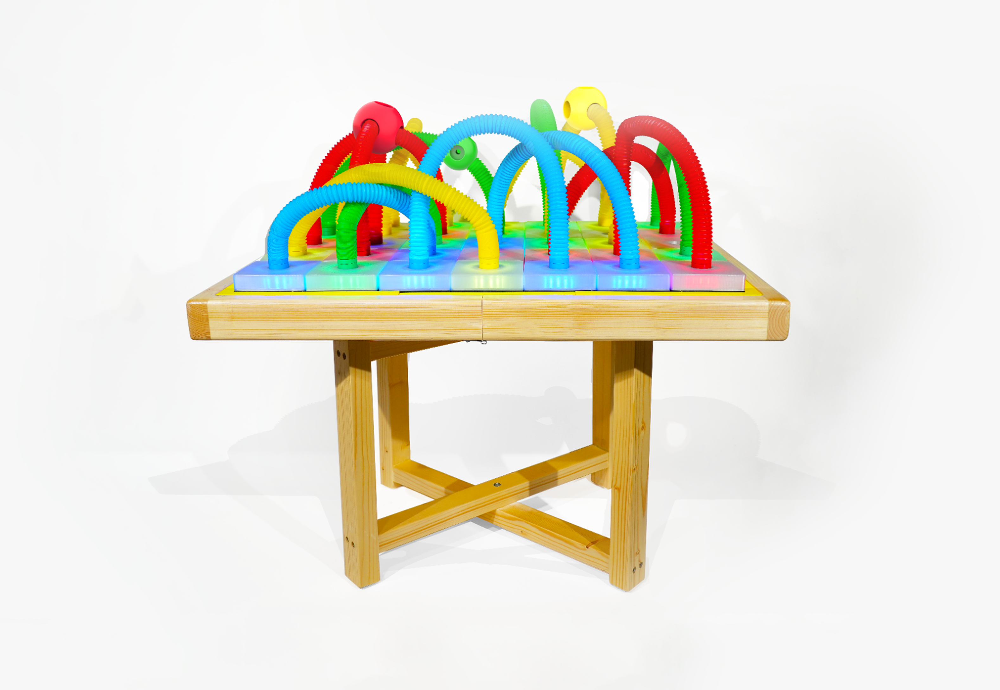
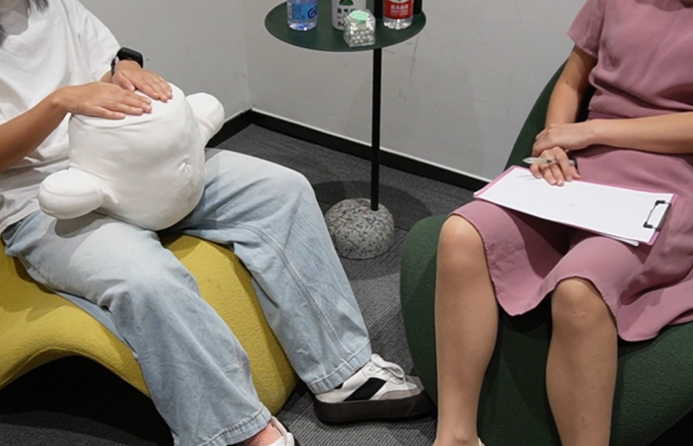
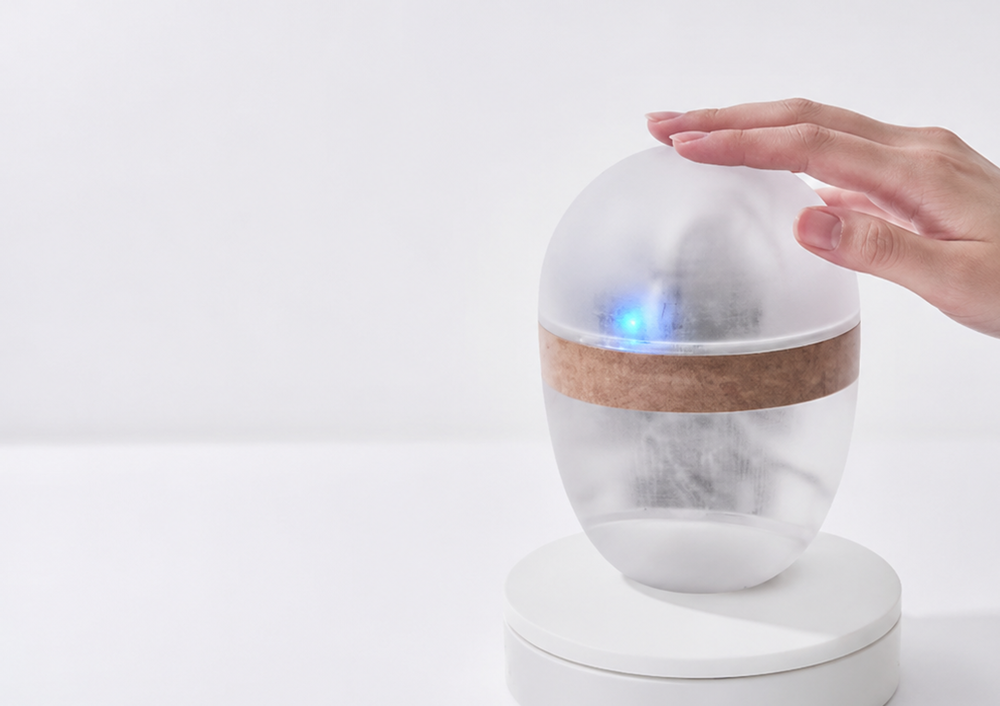
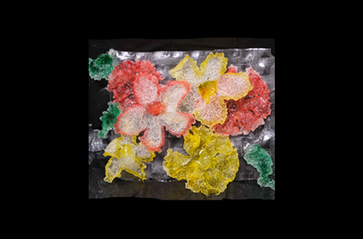

The Hong Kong Polytechnic University
Master of Design
Intelligent Systems Design (ISD)

I'm a Master of Design student in Intelligent Systems Design (ISD) at The Hong Kong Polytechnic University. I received my Bachelor of Engineering in Industrial Design from Southern University of Science and Technology (SUSTech), where I was supervised by Prof. Xueliang Li. I have a strong interest in Human-Computer Interaction, especially in the context of mental health and accessibility.
My recent work has focused on exploring how interactive systems can be designed to better support marginalized communities— particularly individuals living with invisible disabilities or emotional sensitivity. I’m especially drawn to affective design and the ways technology can be more empathetic, inclusive, and responsive to diverse cognitive and emotional needs.
Through my research and design practice, I hope to further explore these themes and collaborate with researchers working at the intersection of HCI, healthcare, and inclusive design.
I’m always happy to exchange ideas, learn from others, and connect with people who share similar interests.
Master of Design
Intelligent Systems Design (ISD)
Bachelor of Engineering
Industrial Design
Yili Wen, Yafei Ge, Xin Tong, and Liang He. 2026. PufFab: Making Shape Transformable Rice Paper for Playful Food Fabrication. In Proceedings of the Twentieth International Conference on Tangible, Embedded, and Embodied Interaction (TEI '26), Article 66, 1–6. https://doi.org/10.1145/3731459.3779326
Kezhuo Wang, Rui Qi, Yafei Ge, Pengcheng An, and Xueliang Li. 2025. RainbowForest: A Playful Educational Tool to Engage Children with ASD in Learning through Play in Classrooms. In Proceedings of the Extended Abstracts of the CHI Conference on Human Factors in Computing Systems (CHI EA '25), Article 741, 1–5. https://doi.org/10.1145/3706599.3721166

RainbowForest is a playful educational tool that supports autistic children’s classroom learning through structured color-matching games and open-ended block-building. It also enables educators to set play rules around specific learning objectives while encouraging child–child and child–teacher interaction.

Lullabot is a social robot designed to alleviate visitors’ social pressure during initial mental health counseling. It provides a soft, nonverbal interaction channel that helps visitors feel more comfortable expressing and regulating emotions in the counseling setting.

BubblePal is a soft social robot that uses playful, peripheral feedback to reframe shame-related bodily experiences. It explores how emotionally expressive and socially acceptable interaction can support self-awareness, emotional regulation, and self-compassion.

PufFab is an interactive design-to-fabrication pipeline for customizing Vietnamese rice-paper patterns that transform from 2D into edible 3D forms when fried. By combining moistening and cutting techniques with a modified 3D printer, it explores playful computational gastronomy and artistic food fabrication.